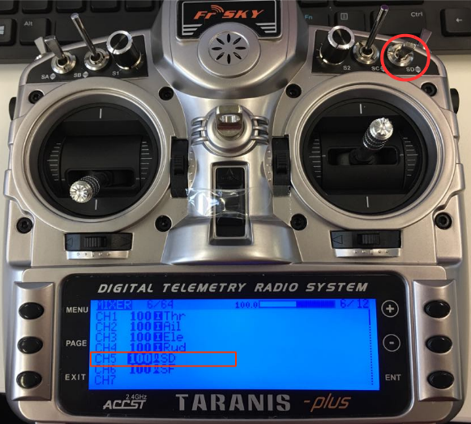

비행 모드 설정
비행 모드 섹션을 사용하면 비행 모드를 무선 채널에 매핑할 수 있으며, 따라서 무선 제어 송신기의 스위치에 매핑할 수 있습니다. 비행 모드 설정 방법과 사용 가능한 비행 모드는 PX4와 ArduPilot이 동일하지 않습니다. (ArduCopter와 ArduPlane 간에도 약간의 차이가 있습니다).
이 섹션에 액세스하려면, 상단 툴바에서 기어 아이콘(차량 설정)을 선택한 다음 사이드바에서 비행 모드를 선택하세요.
플라이트 스택별 설정에 대한 자세한 내용은 다음을 참조하세요.
송신기 설정
비행 모드를 설정하려면, 먼저 모드 스위치의 물리적 위치를 단일 채널로 인코딩하도록 송신기를 설정합니다.
PX4와 ArduPilot 모두에서 최대 6개의 다른 비행 모드를 송신기의 단일 채널에 할당할 수 있습니다. 6개의 비행 모드를 나타내기 위해 송신기의 2-및 3-위치 스위치의 위치를 사용하는 것이 일반적입니다. 그런 다음 각 스위치 조합은 단일 채널에서 전송될 특정 PWM 값으로 인코딩됩니다.
단일 채널은 PX4 및 ArduPlane에서 선택할 수 있지만, 멀티콥터에서는 채널 5로 고정되어 있습니다.
이 과정은 송신기에 따라 차이가 납니다. 아래에 여러 가지 설정 예가 있습니다.
Taranis
이 예는 FrSky Taranis 송신기에 대한 설정들을 설명합니다.
단일 채널에 3방향 스위치 매핑
2개 또는 3개의 모드 중 선택만 지원해야 하는 경우에는 3방향 스위치 하나만으로 모드를 위치에 매핑할 수 있습니다. 아래에서는 Taranis 3-way "SD"스위치를 채널 5에 매핑하는 방법을 나타냅니다.
Taranis UI MIXER 페이지를 열고 아래와 같이 CH5까지 아래로 스크롤합니다.

ENT(ER)를 눌러 CH5 구성을 편집한 다음 소스를 SD 버튼으로 변경합니다.

준비과정이 끝났습니다. 채널 5는 이제 3개의 다른 SD 스위치 위치에 대해 3개의 다른 PWM 값을 출력합니다.
단일 채널에 여러 스위치 매핑
대부분의 송신기에는 6방향 스위치가 없으므로 사용 가능한 스위치 위치(최대 6개)보다 더 많은 모드를 지원할 수 있어야 하는 경우 여러 스위치를 사용하여 표시하여야 합니다. 일반적으로, 2위치 및 3위치 스위치의 위치를 단일 채널로 인코딩하여 수행되므로 각 스위치 위치 조합이 다른 PWM 값을 생성합니다.
FrSky Taranis에서 이 프로세스는 두 개의 실제 스위치 위치의 각 조합에 "논리적 스위치"를 할당하는 것을 포함합니다. 그런 다음 각 논리적 스위치는 동일한 채널에서 다른 PWM 값에 할당됩니다.
이 비디오는 FrSky Taranis 송신기를 사용한 수행과정을 나타냅니다: https://youtu.be/TFEjEQZqdVA